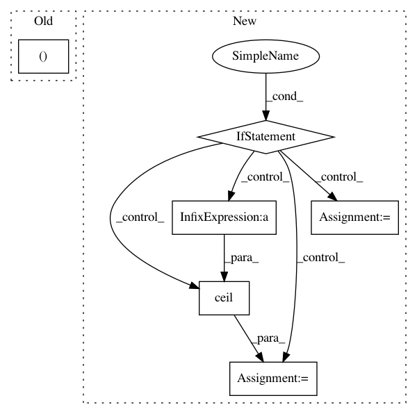

10781ce4f0b85b5468ed8d8d485412d8cb307ae6,src/DataLoaderIAM.py,DataLoaderIAM,getIteratorInfo,#DataLoaderIAM#,117
Before Change
def getIteratorInfo(self):
"current batch index and overall number of batches"
return (self.currIdx // self.batchSize + 1, len(self.samples) // self.batchSize)
def hasNext(self):
"iterator"
return self.currIdx + self.batchSize <= len(self.samples)
After Change
def getIteratorInfo(self):
"current batch index and overall number of batches"
if self.currSet == "train":
numBatches = int(np.floor(len(self.samples) / self.batchSize)) // train set: only full-sized batches
else:
numBatches = int(np.ceil(len(self.samples) / self.batchSize)) // val set: allow last batch to be smaller
currBatch = self.currIdx // self.batchSize + 1
return currBatch, numBatches
def hasNext(self):
In pattern: SUPERPATTERN
Frequency: 3
Non-data size: 6
Instances
Project Name: githubharald/SimpleHTR
Commit Name: 10781ce4f0b85b5468ed8d8d485412d8cb307ae6
Time: 2021-01-22
Author: harald@newlaptop.com
File Name: src/DataLoaderIAM.py
Class Name: DataLoaderIAM
Method Name: getIteratorInfo
Project Name: reinforceio/tensorforce
Commit Name: 7b03c4edfe749b3de26c71631d63f9269d7c7268
Time: 2019-02-11
Author: alexkuhnle@t-online.de
File Name: tensorforce/core/layers/convolutions.py
Class Name: Conv2d
Method Name: get_output_spec
Project Name: analysiscenter/batchflow
Commit Name: 29f852d88e32f616437a6ca5cf6f886680523ede
Time: 2019-10-31
Author: 7520522+a-arefina@users.noreply.github.com
File Name: batchflow/utils.py
Class Name:
Method Name: plot_results_by_config